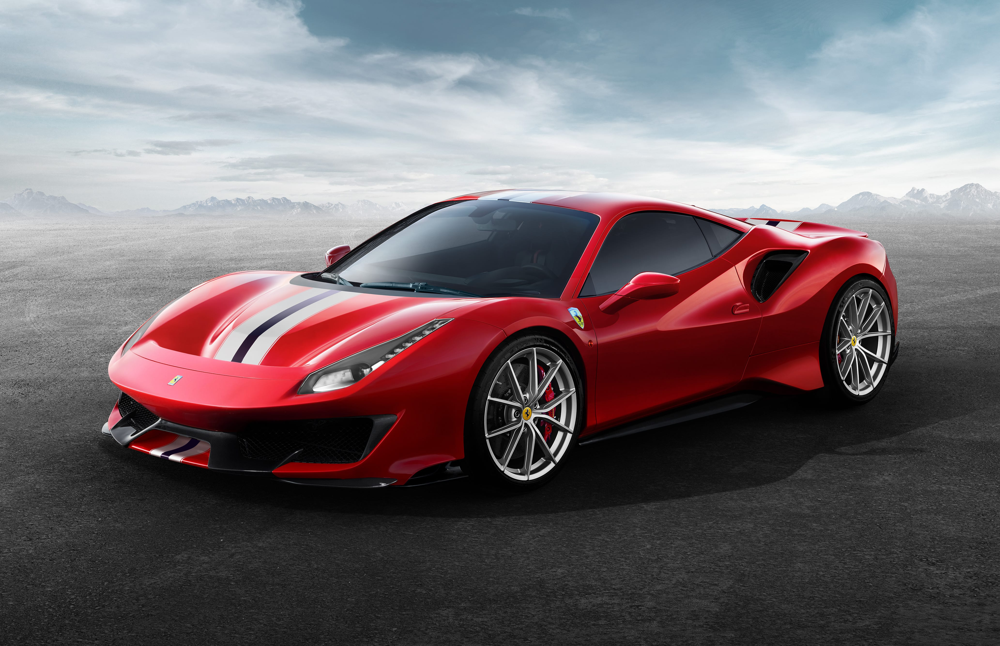
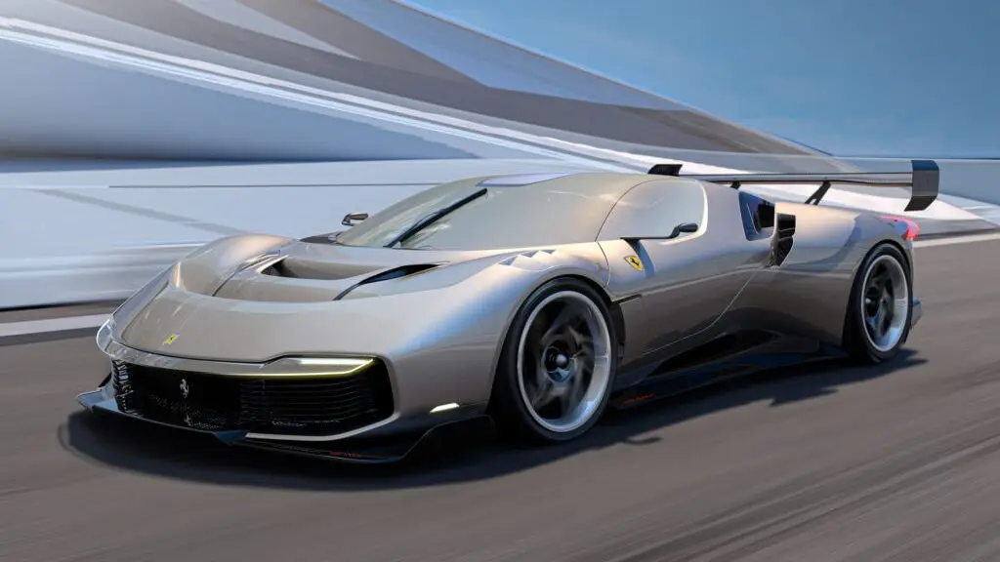
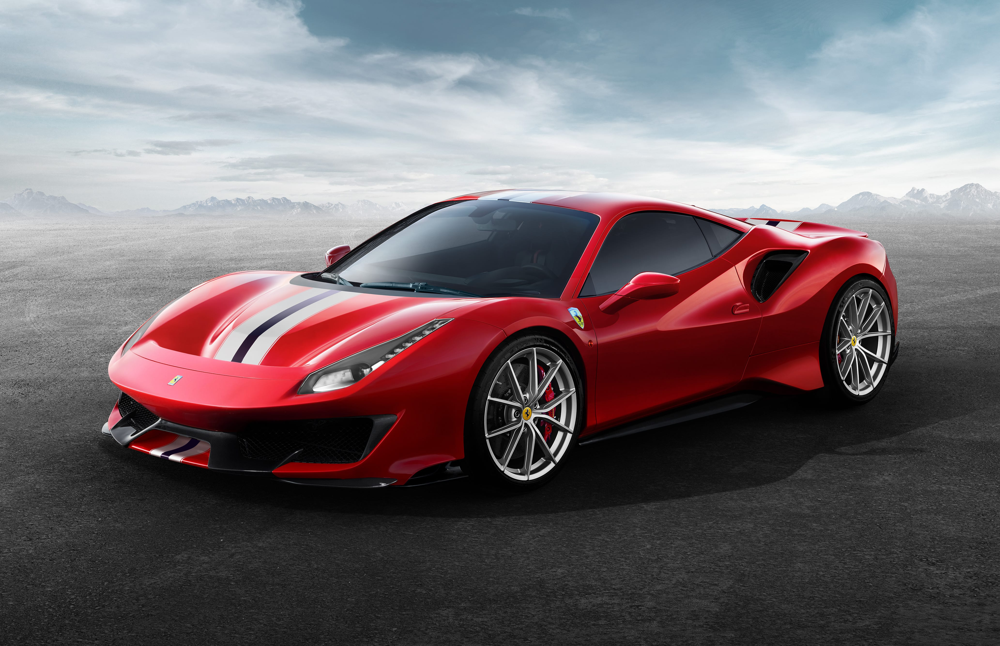
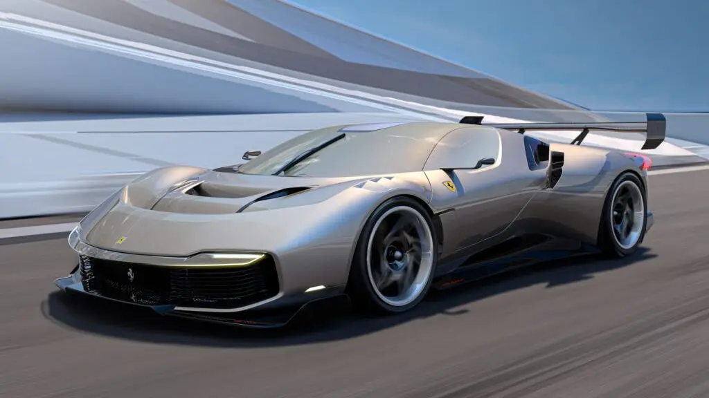

Las joyas de Ferrari
Ultimos proyectos
 



Equipo F1 de la escuderia
conformado por el corredor Carlos Sainz y Charles Leclerc
Poco de historia
Fundación: En 1929, Enzo Ferrari fundó la Scuderia Ferrari, un equipo de carreras de autos deportivos, que inicialmente competía con autos Alfa Romeo. La Scuderia Ferrari se convirtió en un equipo exitoso en las competencias de automovilismo.
Primeros automóviles Ferrari: En 1947, Ferrari fabricó su primer automóvil de carretera, el Ferrari 125 S, equipado con un motor V12. Este fue el inicio de la producción de automóviles deportivos bajo la marca Ferrari.
Éxito en las carreras: Ferrari ganó su primera carrera de Fórmula 1 en 1951 y se convirtió en uno de los equipos más dominantes en la historia de la Fórmula 1. La compañía ha ganado numerosos campeonatos de pilotos y constructores a lo largo de los años.
Modelos icónicos: Ferrari ha producido una serie de modelos icónicos a lo largo de los años, como el Ferrari 250 GTO, el Ferrari Testarossa, el Ferrari F40, el Ferrari Enzo y el Ferrari LaFerrari, entre otros.
Expansión: A lo largo de las décadas, Ferrari diversificó su línea de productos con automóviles deportivos de lujo, superdeportivos y modelos de edición limitada.
Propiedad de Fiat Chrysler Automobiles: En 1969, Fiat adquirió una participación mayoritaria en Ferrari, y en 1988, se convirtió en propietario único de la compañía. Sin embargo, Ferrari ha mantenido una gran autonomía en sus operaciones y diseño.
Cotización en bolsa: En 2015, Ferrari se convirtió en una empresa independiente y cotizó en la Bolsa de Valores de Nueva York bajo el símbolo "RACE".
Exclusividad y prestigio: Ferrari ha mantenido una política de producción limitada para mantener su exclusividad y prestigio. La marca es conocida por su diseño distintivo, su rendimiento de alto nivel y su asociación con la velocidad y el lujo.
Hoy en día, Ferrari sigue siendo una de las marcas de automóviles más reconocidas y deseables del mundo, con una larga historia de éxito en las carreras y una base de admiradores apasionados en todo el mundo.